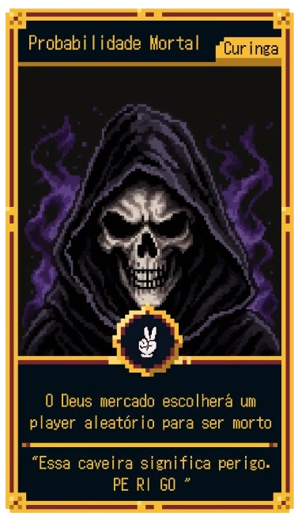
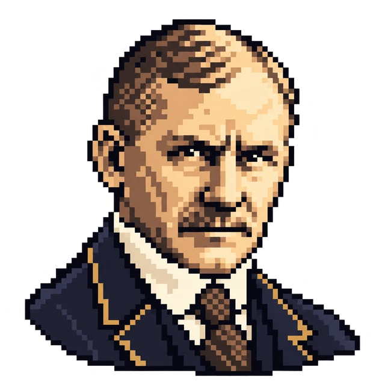

4 cartas
Ação
Movem o dinheiro: ganham, derrubam o saldo dos rivais e forçam decisões caras.
Nosso · Toyotinho · EmpréstimoDocumentação · 6 capítulos · BETA
Do primeiro real ao fim dos 10 turnos: objetivo, turno, cartas, economia, avatares e multiplayer. Leia na ordem ou pule direto ao assunto.
Capítulo 01
Você comanda uma empresa em um mundo onde o mercado é uma divindade caprichosa. Cada rodada cobra preço, cada carta pode salvar ou afundar o seu caixa — e no fim, só o saldo importa.
Você começa com R$ 2.000, 7 cartas na mão e 10 turnos para provar que merece existir. Chegou a R$ 0 é falência imediata: sem reserva, sem crédito, sem volta.
R$ 2.000 por empresa. O saldo nunca fica negativo — zero já é o fim.
7 cartas. O teto é 7 e só sobe durante o evento do Deus Mercado, até 10.
10 turnos completos, com a vez girando para a direita entre os vivos.
O livro-caixa mostra receitas, despesas e o seu lucro acumulado, mas ele é estatística: quem define o vencedor é o saldo na tela.
Capítulo 02
Cada jogador tem 25 segundos por turno. A vez avança para o próximo vivo e ninguém espera: se o relógio zera, a vez passa adiante.
No fim da rodada você recebe R$ 1.000 mais R$ 100 a cada rodada que passa, multiplicados pela sua produtividade.
A quota é de 2 cartas por turno, de qualquer classe. Guardar ou jogar cartas da Área Segura não consome essa quota.
Cartas da mesma classe em sequência acrescentam jogadas extras: até 2 extras, fechando o turno em 4 cartas.
O Defense Slot é único: uma nova defesa substitui a anterior e dura 2 turnos. Ao bloquear um ataque, ela é consumida.
1 slot na sua mão para guardar cartas. Guardar não gasta quota nem encerra o turno, e jogar de lá também não consome quota — pode ser usado até fora do seu turno, como reação.
Gastou a quota ou quer guardar energia? Passe quando quiser. Ao terminar o turno, sua mão completa até 7 cartas.
A cadeia zera no início do seu turno e recomeça do zero se você trocar de classe no meio da sequência.
Cartas de proteção não gastam a quota nem alimentam a cadeia: elas vão direto para o Defense Slot. Se uma nova defesa entrar, a antiga vai para o descarte.
Capítulo 03
São 32 cartas no baralho padrão, divididas em 4 classes. Cada carta tem chance de sucesso própria, entre 55% e 100% — falhou, o efeito não aplica.
Movem o dinheiro: ganham, derrubam o saldo dos rivais e forçam decisões caras.
Nosso · Toyotinho · EmpréstimoInterferem nas mãos e nos turnos alheios: roubam cartas, mexem em chances e travam combos.
Que Atrevido · Tempos e Movimentos · SeiketsuProteções que ocupam o Defense Slot e bloqueiam perdas direcionadas por 2 turnos.
Mão Visível · Psicologia IndustrialEfeitos globais que atingem a mesa inteira e embaralham as contas de todo mundo.
O Monstro Inflação · Flutuação do Mercado
O título e a ilustração que identificam a carta na mão e na Pilha de Jogadas.
Percentual de acerto. Em caso de falha o efeito não aplica — mas o dinheiro de falha, quando existe, é cobrado mesmo assim.
O que acontece no exato momento em que a carta é jogada, com alvo e duração.
O risco calculado da aposta e o momento certo de segurar a carta na mão.
Da segunda carta com o mesmo id no seu turno em diante, a chance é multiplicada por 1,3 (limite de 100%). O contador zera no seu próximo turno. Repetir carta rende.
Verificadas no fim da rodada, depois da renda. Cada combinação paga uma vez por rodada e exige todas as cartas jogadas com sucesso naquela rodada.
| Combinação | Cartas | Prêmio |
|---|---|---|
| 5S Completo | Seiri, Seiton, Seiso, Seiketsu, Shitsuke | +R$ 300 |
| Tríade Financeira | Empréstimo, Nosso, Cris e Greg Agiotas | +R$ 250 |
| Marketing e Produção | Toyotinho, Presente do Noel, Queima de Estoque | +R$ 200 |
| Controle e Defesa | Psicologia Industrial, Mão Visível, Tempos e Movimentos | +R$ 150 |
A galeria de cartas traz as 32 cartas com filtro por classe, busca e ficha completa de chance, efeito e dica.
Capítulo 04
O caixa é a sua vida, mas dois medidores decidem quanto ele rende: a satisfação do time e a produtividade da operação.
A produtividade é individual e acumula rodada após rodada, sem teto de cima. Com produtividade negativa a renda cai; chegando a −100% ela vira zero e você só depende das cartas.
A barra começa em 100. Em 0 o time entra em greve e você perde o próximo turno; ao sair, a barra volta a 100.
Em 200, suas próximas 2 cartas têm o efeito de sucesso dobrado. Acabou o bônus e a barra volta a 100.
A cada 2 rodadas — nas rodadas 2, 4, 6 e 8, nunca depois da 10 — o mercado abre as portas em quatro passos, sempre nesta ordem.
15 segundos para um produto único: uma carta ou um kit de 2 a 3 cartas. Um lance por jogador, em passos de R$ 100, de R$ 0 a R$ 500. O maior lance leva tudo, pagamento único.
Outros 15 segundos, com até 3 cartas à venda por R$ 100 a R$ 400 — curingas custam R$ 100 a mais. Quem compra leva a carta para a mão.
De 2 a 5 cartas da mão ou da Área Segura viram uma Super Carta sorteada: Kaizen Supremo, Jidoka Total, Heijunka Total ou Andon Total. O tipo é sorteio, sem escolha.
O meta-evento encerra, o teto de 10 cartas volta ao normal e a rodada segue. Antes do leilão, um Curinga Global é sorteado e passa a valer para a mesa inteira.
R$ 0 é falência imediata: saldo zero, status de eliminado, sem fundo de reserva. O saldo nunca fica negativo — e o livro-caixa continua registrando o que sobrou.
Capítulo 05
Três avatares comprados com moedas do perfil, cada um com uma habilidade passiva que muda o seu jeito de jogar. Eles valem em qualquer mesa multiplayer.

Habilidade Cartas de Ação e Efeito que você joga recebem +10% de chance de sucesso.
Estilo Agressivo: quanto mais você joga, mais o bônus rende.
Habilidade No início do seu turno, o jogador de maior saldo doa R$ 100 ao de menor saldo (entre os vivos). Se você for o mais rico, não acontece.
Estilo Puxa dinheiro da mesa para baixo mesmo quando você está na vala.
Habilidade Uma vez por rodada, quando um adversário joga carta negativa contra você, 30% de chance de neutralizar o efeito.
Estilo Defensivo: aguenta marteladas de efeito sem quebrar o caixa.
Os avatares ficam na loja do perfil por 100 moedas cada, e as moedas vêm das partidas: +10 por vitória. Na página de avatares você vê as habilidades lado a lado.
Capítulo 06
Nesta versão o jogo é multiplayer: de 2 a 8 jogadores, na mesma mesa ou pela rede local. As regras dos capítulos anteriores valem para todo mundo.
Você escolhe quantos jogadores entram na mesma mesa: 2 é DUELO, 3 e 4 é BATALHA, 5 e 6 é GUERRA, 7 e 8 é CAOS TOTAL. Mesmo motor, mesma renda, mesma volta ao mercado.
O anfitrião roda a partida e os outros espelham o estado pelo Wi-Fi da casa. Cada um no seu aparelho, com o tempo de turno expirando de verdade.
Ligue o hotspot e toque em CRIAR SALA. O IP e a porta aparecem na tela do anfitrião.
Cada jogador entra com o IP do anfitrião na mesma rede e aparece na sala de espera, com chat e status de prontidão.
Todos prontos? O anfitrião inicia a partida. Vagas vazias podem ser preenchidas por bots, até o limite de 8.
Na partida em rede, o anfitrião conduz o leilão; a lojinha e a fusão ficam de fora para a mesa não travar. Na arena, os quatro passos do evento rodam por inteiro.
Combine este manual com a galeria de cartas e a página de avatares — ou volte para o início para baixar o jogo.
Referência rápida